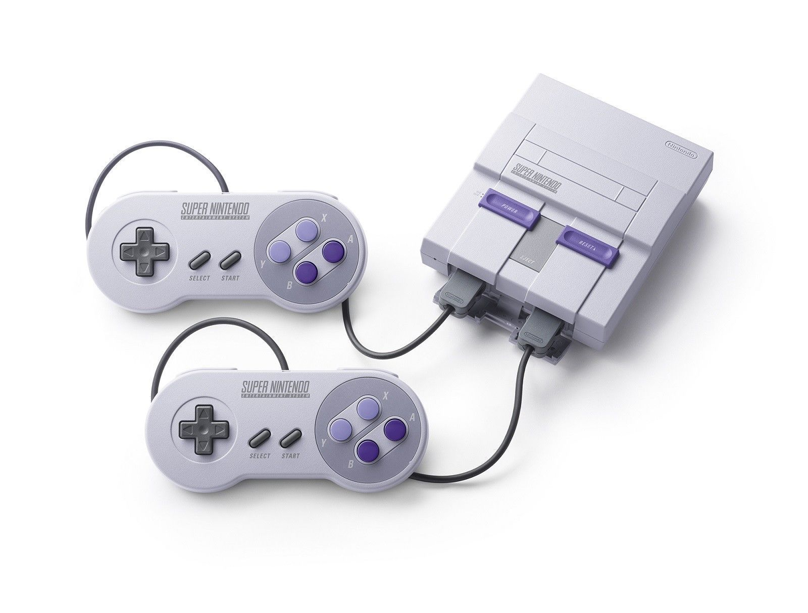
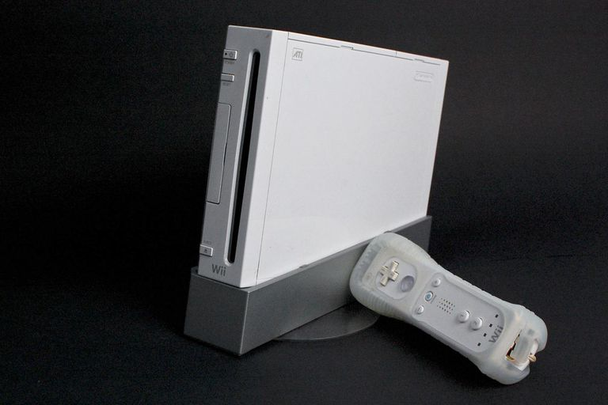

Mario Kart is a series of go-kart racing video games that was a spin-off of the Super Mario series. Although Mario Kart gained popularity as a Wii game, it was initially released as Super Mario Kart for the Super Nintendo in 1992.
 Super Nintendo

Wii
Even though the core concept of Mario Kart has stayed the same, the change in gaming system evolution of time has brought about a significant change in visualization and capability. For example, there is a wider selection of characters and race tracks. In addition, Mario Kart also has a coini battle feature in which players have to try to collect and retain as many coins as possible. Although Nintendo has changed up many aspects of Mario kart, the core experience still remains the same.